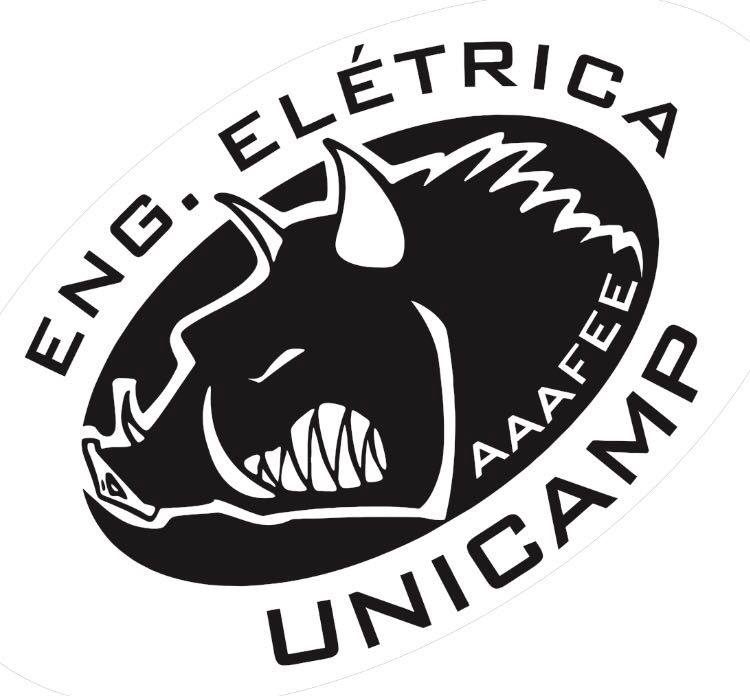
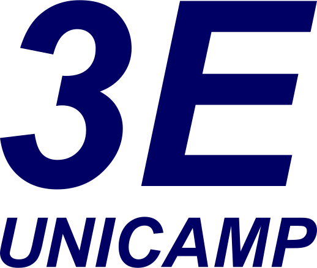
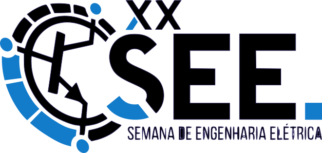
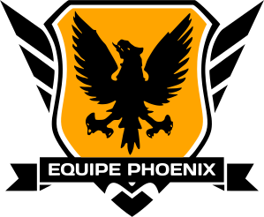

Conheça os cursos de engenharia elétrica da UNICAMP
Conheça algumas informações sobre seu curso a Faculdade de Engenharia Elétrica e de Computação:
Graduação
0
Estrelas
Nota máxima pelo Guia do Estudante 2016Pós-graduação
0
Pontos
Nota máxima pelo CAPES, de 2010 a 2012Professores
0
Doutores
Todos com dedicação exclusiva na FEECFEEC
0
Anos
47 anos sendo 21 destes de parceria com o ICInformações pré-matrícula
A matrícula dos candidatos convocados para os cursos de graduação da Unicamp cabe à Diretoria Acadêmica, DAC. Memorize o calendário de matrícula, pois todas são de extrema importância!
Calendário de Matrícula
-
14/02
-
Início da Matrícula OnlineAcadêmicoDas 8:00 até às 18:00 do dia 15/02
-
-
15/02
-
Fim da Matrícula OnlineAcadêmicoAtenção: A vaga só estará garantida após a matrícula presencial!
-
-
17/02
-
2ª Chamada dos AprovadosAcadêmicoÀs 12:00
-
-
21/02
-
Matrícula PresencialAcadêmicoDas 9:00 às 12:00. Para ingressantes da 1ª e 2ª chamadas
-
3ª Chamada dos AprovadosAcadêmicoAté às 23:59
-
-
23/02
-
Matrícula Presencial 3ª ChamadaAcadêmicoDas 9:00 às 12:00
-
-
02/03
-
Confirmação de MatrículaAcadêmicoDas 9:00 às 16:00. A matrícula só estará garantida após sua confirmação, caso contrário, será automática e definitivamente cancelada!
-
Choppada de Confirmação da EESocialA primeira festa da Engenharia Elétrica! (Entrada de bixo e bixete é grátis!)
-
Início das aulasAcadêmicoO tão esperado dia!
-
A matrícula: Seu primeiro contato com a UNICAMP
Certifique-se de ter em mãos todos os documentos necessários com antecedência, chegar na hora e local corretos, além de levar um dinheiro extra para comprar o Kit Bixo!
Informações
- A matrícula só estará garantida após sua confirmação na data e horário estipulados, caso contrário, será automática e definitivamente cancelada!
- O candidato que tenha concluído estudos equivalentes ao ensino médio no exterior deve apresentar parecer de equivalência de estudos da Secretaria da Educação.
- Os documentos em língua estrangeira deverão estar visados pela autoridade consular brasileira no país de origem e acompanhados da respectiva tradução oficial.
- O menor de 18 anos deve apresentar os documentos Título de Eleitor e Certificado de Reservista tão logo esteja de posse dos mesmos.
- A matrícula poderá ser feita por procuração, nos seguintes termos: por instrumento particular, se o candidato for maior de 18 anos; por instrumento público e com assistência de um dos pais ou responsável legal, se o candidato for menor de 18 anos.
- O candidato que tenha concluído estudos equivalentes ao ensino médio no exterior deve apresentar parecer de equivalência de estudos da Secretaria da Educação.
- Para mais informações, acesse o site da COMVEST
Documentos necessários
- Diploma ou Certificado de Conclusão do ensino médio, e Histórico Escolar completo do ensino médio (somente para optante do PAAIS);
- Certidão de Nascimento ou Casamento;
- Cédula de Identidade Nacional para brasileiros, Registro Nacional de Estrangeiro para estrangeiros residentes no Brasil e Passaporte para estrangeiros não-residentes no Brasil;
- Cadastro de Pessoa Física – CPF, para os brasileiros ou estrangeiros com Registro Nacional de Estrangeiro. Não será aceito CPF de responsável;
- Título de Eleitor para os brasileiros maiores de 18 anos;
- Certificado de Reservista ou Atestado de Alistamento Militar ou Atestado de Matrícula em CPOR ou NPOR, para os brasileiros maiores de 18 anos, do sexo masculino;
- Uma foto 3x4 recente para a Unicamp e duas fotos 3x4 recentes para a Famerp.
Kit Bixo
Quer chegar abalando no curso? Então separe um dinheiro extra para adquirir o seu Kit Bixo!
Você vai levar para casa uma infinidade de produtos como: Camiseta Exclusiva, Caneca 500mL, Tirante, Mochila, Bloquinho de Post-it, Squeeze, Estojo completo (estojo, caneta, lápis e régua), Chaveiro e Vale-temaki.
Informe-se antes de chegar na UNICAMP
O campus pode ser amedrontador à primeira vista, por isso anote as informações dos departamentos mais importantes, salve uma foto do mapa e verifique as rotas que irá usar!
Restaurantes Universitários
Nos Restaurantes Universitários, comumente chamados de "Bandejão", o preço da refeição é de R$ 2,00 para estudantes. Você deve carregar sua carteira estudantil nos postos de recarga localizados do lado externo dos restaurantes para utilizá-los.
Os restaurantes mais utilizados são: Restaurante Universitário (RU), Refeitório da Administração (RA) e Restaurante da Saturnino (RS). Vale lembrar que há um cardápio vegetariano, no entanto o mesmo só é servido no RS. Cardápio dos Restaurantes
Circulares
A UNICAMP possui 3 linhas de circulares que são gratuitos e facilitam a vida de quem necessita se deslocar pelo campus.
Rotas a pé
De:
Para:
Transporte:
- Avenida 1: Avenida Doutor Romeu Tórtima
- Avenida 2: Avenida Professor Atílio Martini
- CB: Ciclo Básico I
Fica na praça central, mais afastado das entradas. - PB: Ciclo Básico II
Fica mais próximo do Bandejão. Dá para vê-lo da entrada da Avenida 2. - FEEC: Faculdade de Engenharia Elétrica e de Computação
Fica mais próximo da entrada da Avenida 1
- SENAI: SENAI Roberto Mange
Melhor instituto não-oficial da Unicamp - Bandejão RU: Restaurante Universitário
Fica mais próximo da entrada da Avenida 2. - Bandejão RS: Restaurante Universitário
Fica mais próximo do IC 3. - Bandejão RA: Restaurante Universitário
Fica mais próximo da FEEC.
Atividades extracurriculares: O que fazer na UNICAMP, além de estudar?
A parte legal da elétrica, tirando as aulas é claro!
Entidades

AAAFEE
A Associação Atlética Acadêmica da Ciência e Engenharia da Computação é a entidade que promove a prática de esportes na Computação, além de realizar festas e eventos de integração.

CABS
O CABS é o centro acadêmico da elétrica, entidade trabalha para garantir os interesses dos estudantes e melhorar o curso como um todo.

3E
A 3E é a empresa júnior da Engenharia Elétrica. Oferece uma oportunidade de vivência empresarial nas áreas de administrção, mercado e recursos humanos, num ambiente que visa o desenvolvimento dos seus membros.

SEE
A Semana da Engenharia Elétrica busca apresentar aos participantes uma visão mais ampla das diversas áreas da Engenharia e aproximá-los da realidade de cada carreira através de palestras, minicursos e visitas técnicas.

IEEE
Entidade local da IEEE na Unicamp.

PHOENIX
Equipe de Robótica da UNICAMP composta por alunos da Mecânica, Elétrica e Computação. Desenvolvem projetos para participar de competições como a RoboCore.
GAMUX
Grupo de Pesquisa e Desenvolvimento de Jogos da UNICAMP. Ótima oportunidade para quem tem curiosidade de saber como são feitos os jogos eletrônicos.

GER
Grupo de robótica autônoma com membros do curso de Computação e Engenharia de Controle e Automação. Participam anualmente de competições (CBR, Freescale Cup), além de realizar outros projetos.
Calendário de Eventos
-
Março
-
Recepção / PalestraAcadêmicoPrimeiro contato com os veteranos e as entidades
-
Choppada de ConfirmaçãoSocialChoppada oficial do curso, geralmente realizado em conjunto com os cursos de Enfermagem e Fonoaudiologia
-
Subindo o Morro 2017SocialCampinas Hall juntamente com as atléticas AAAXD e AAAFEAGRI orgulhosamente apresentam a quarta edição da festa funk mais tradicional de Campinas: Subindo o Morro!
-
-
Abril
-
Pré-OlimpíadasEsportivoUma prévia do maior torneio esportivo dentro do campus
-
CHOPPADA DES BIXES 2017SocialBiologia, Elétrica e Farmácia apresentam: CHOPPADA DES BIXES 2017!!!
-
-
Maio
-
LottusSocialA festa eletrônica oficial da Computação! Conta com a presença de grandes nomes do cenário
-
-
Junho
-
INTERCOMPEsportivoSocialEvento esportivo que reúne os principais cursos de computação do Estado
-
-
Agosto
-
SEEAcadêmicoSemana da Engenharia Elétrica que conta com palestras, workshops e muito mais
-
-
Setembro
-
InterHack 2017AcadêmicoSocialPrimeiro Hackathon Interuniversitário do Brasil, de Graça!
-
OlimpíadasEsportivoMaior evento esportivo da UNICAMP. Reúne todos os cursos, além de cursos da unidade Limeira
-
INTERANOSEsportivoSocialEvento esportivo entre os anos da computação. Sua chance de jogar contra seus veteranos
-
-
Outubro
-
KomptoberfestSocialA melhor festa no estilo da tradição alemã!
-
-
Novembro
-
MC Lovin' Party 6SocialA maior festa em república da UNICAMP!
-
Cursos diversos
Fiquem ligados, pois existem diversos cursos sendo oferecidos dentro da UNICAMP, seja do seu curso ou não! Dentre eles destacam-se as atividades da FEF, aulas de idiomas do CABS/CEL e até aulas de dança!
Dúvidas / Dicas / Utilidades
Tire suas dúvidas e aproveite as dicas de quem já esteve no seu lugar!
Perguntas Frequentes
Quem entrou a partir da 2ª Chamada não tem Matrícula Online?
Não. A partir da 2ª Chamada as matrículas serão apenas presenciais!
Fiz a matrícula, mas não escolhi minhas disciplinas. Como faço?
No primeiro semestre a DAC é que escolhe as disciplinas para você, automaticamente. A partir do 2º semestre você passa a ser encarregado de efetuar a pré-matrícula e escolher sua grade.
Vou ter aulas nos primeiros semestres na FEEC ou no CB?
A maioria das aulas será ministrada nos Ciclos Básicos I e II, apenas algumas serão na FEEC.
Quando ocorrem as aulas no SENAI e como chego lá?
A primeira aula do SENAI ocorre no sábado pela manhã, onde vocês receberão o calendário com as manhãs e tardes nas quais ocorrerão as próximas aulas. Nem todos tem aulas nos mesmos sábados nem nos mesmos turnos, fiquem ligados.
A FEEC freta um ônibus para levar os alunos até o SENAI. O ônibus sai do estacionamento da Biblioteca Central (BCCL) por vota das 6h00min. Verifiquem com seus veteranos do CABS sobre possíveis mudanças neste horário. É comum haver alterações e cancelamentos do ônibus sem aviso aos alunos.
Como faço para pegar um livro nas bibliotecas?
Você deverá se cadastrar no sistema de bibliotecas da UNICAMP. Vá até a Biblioteca Central e cadastre-se o quanto antes!
USP ou UNICAMP?
#xupausp
Dicas
- Os livros da Elétrica ficam no IFGW e na BAE (dentro da Biblioteca Central)
- A partir do 2º semestre, use o GDE para organizar sua grade de disciplinas!
- As disciplinas oferecidas pelo IFGW (Instituto de física) possuem média 7, as demais possuem média 5
- Peça conselhos e informações aos seus veteranos! Eles não mordem! (pelo menos a maioria)
- Precisando de atendimento de saúde? Vá até o CECOM, é de graça!
- Anote em algum lugar bem visível todas as datas de prova que você terá durante o semestre!
- Geralmente as disciplinas possuem 3 provas, P1, P2 e P3. Estude bastante desde a P1 para não correr o risco de pegar exame!
- Recorra aos seus veteranos quando precisar de materiais específicos para certas disciplinas, exemplo: Jaleco, óculos de proteção e luvas para a disciplina de química, QG100.
- Precisa de material pra desenho técnico ou SENAI? Fale com seus veternos!
Utilidades
Grupo do Facebook
Se você ainda não faz parte do grupo "Bixos e Bixetes Engenharia Elétrica 017 - UNICAMP" peça a algum veterano para adicioná-lo!